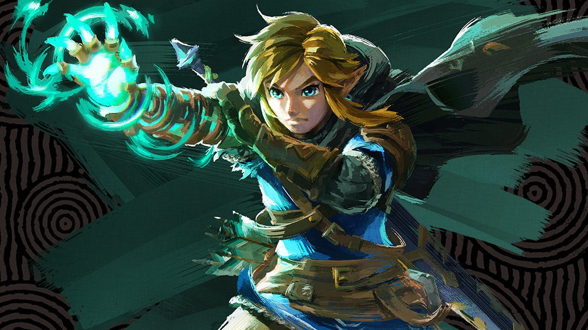

Los héroes que definieron una era
Desde los pixeles de los años 80 hasta los mundos en 3D del siglo XXI, estos personajes dejaron una huella imborrable en millones de jugadores alrededor del mundo, incluyendo Bogotá, donde la cultura gamer ha crecido de forma notable en la última década.

Mario es sin duda el personaje más reconocido en toda la historia de los videojuegos. Creado por el diseñador japonés Shigeru Miyamoto, apareció por primera vez en el arcade Donkey Kong en 1981 bajo el nombre de "Jumpman". En 1985, con el lanzamiento de Super Mario Bros. para la Nintendo Entertainment System (NES), el fontanero italiano se convirtió en el símbolo del resurgimiento de los videojuegos tras la gran crisis de 1983. A lo largo de décadas, Mario ha protagonizado más de 200 títulos distintos, desde juegos de plataformas hasta carreras, deportes y aventuras en mundos abiertos. Su franquicia ha vendido más de 800 millones de copias en todo el mundo, convirtiéndolo en la saga más exitosa de la historia del entretenimiento interactivo. Mario no solo salvó a Nintendo en momentos críticos, sino que redefinió lo que un videojuego podía ser: una experiencia accesible, divertida y llena de imaginación para todas las edades. Hoy es tan reconocible a nivel mundial como los personajes más icónicos del cine o la televisión.

Link es el héroe silencioso de Hyrule, protagonista de una de las sagas más aclamadas de la industria: The Legend of Zelda. Creado por Shigeru Miyamoto junto a Takashi Tezuka, Link hizo su debut en 1986 en Nintendo Famicom. Desde entonces, ha encarnado al elegido por los dioses para proteger la Trifuerza del Coraje y salvar a la princesa Zelda de la eterna amenaza de Ganon. A diferencia de otros personajes, Link no habla: es el jugador quien da voz a sus acciones, lo que crea una conexión única e inmersiva. Su historia más célebre, Ocarina of Time (1998), es considerada por críticos y jugadores como el mejor videojuego jamás creado, gracias a su narrativa profunda, su mundo abierto y su sistema de combate revolucionario. Link representa la aventura pura: la exploración, el descubrimiento y el triunfo del bien sobre el mal en mundos llenos de magia, misterio y emoción.

Sonic el erizo azul nació en 1991 con una misión clara: ser la respuesta de SEGA al arrasador éxito de Mario. Diseñado por Yuji Naka y Naoto Ohshima, Sonic fue concebido como un personaje más moderno, rebelde y veloz, con una actitud desafiante que conectó profundamente con los jóvenes de los años 90. Su juego debut en la Sega Genesis fue un éxito inmediato, vendiendo millones de unidades y consolidando a SEGA como un rival serio de Nintendo en la llamada "guerra de consolas". La velocidad no era solo un adorno estético: era el corazón de su mecánica de juego, y esa innovación marcó a toda una generación. Con el tiempo, la franquicia de Sonic se expandió a series animadas, cómics, películas de Hollywood y decenas de juegos. Aunque tuvo épocas difíciles en la transición al 3D, Sonic ha demostrado una notable resiliencia y sigue siendo uno de los personajes más queridos de la cultura gamer global.

Lara Croft es mucho más que un personaje de videojuego: es un ícono cultural que transformó la industria al demostrar que una protagonista femenina podía ser tan poderosa e inspiradora como cualquier héroe masculino. Creada por el equipo de Core Design y lanzada en 1996, Lara es una arqueóloga británica de familia noble que abandona sus privilegios para explorar tumbas antiguas, resolver acertijos y enfrentarse a peligros en los rincones más remotos del mundo. Su primer juego revolucionó la acción en tercera persona y la narrativa cinematográfica en los videojuegos, estableciendo un estándar que influyó en toda la industria. Lara Croft se convirtió en el primer personaje de videojuego en aparecer en la portada de revistas de moda internacionales y fue incluida en el Libro Guinness de los Récords como la heroína virtual más exitosa de la historia. Dos películas protagonizadas por Angelina Jolie y una trilogía reimaginada en el siglo XXI reafirman su vigencia como ícono atemporal.

John-117, conocido como Master Chief Petty Officer, es el soldado más famoso de la ciencia ficción en los videojuegos. Creado por Bungie Studios y lanzado junto al primer Xbox en 2001, Master Chief es un supersoldado del siglo XXVI, mejorado genéticamente y equipado con la legendaria armadura MJOLNIR, cuya misión es proteger a la humanidad de la amenaza alienígena conocida como el Covenant. Halo: Combat Evolved no solo fue un juego brillante: fue el título que demostró que un shooter en primera persona podía funcionar perfectamente en consola. La franquicia Halo transformó la industria, popularizó el multijugador en línea en consolas y convirtió a Xbox en una plataforma de referencia mundial. Master Chief es un personaje de pocas palabras pero de enorme presencia: su silueta con casco dorado es tan reconocible como la de cualquier superhéroe, y su historia sigue expandiéndose a través de juegos, novelas y una serie de televisión en Paramount+.